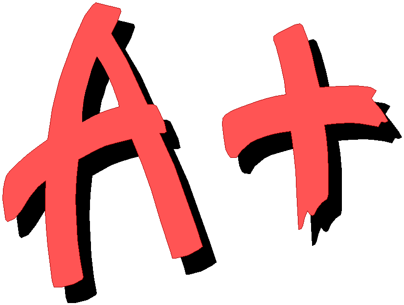

M. Kip Hartvigsen / Instructor
Smith 358 / 3:00 p.m.
Phone / 356-1455
Fall 1998
English 211 / Advanced Writing &
Critical Reading
M. Kip
Hartvigsen / Instructor
Smith 358 / 3:00 p.m.
Phone / 356-1455
Fall 1998
Course Aims
The intent of English 211 is to help you become 1)
the best thinker you are capable of, 2) an effective critic of the arguments you encounter
in every-day life, and 3) a more competent writer. English 211 aims are based on the assumption that reading and writing are
connected and necessary to the development of critical thinking skills. Class readings
focus on non-fiction prose drawn from several disciplines. Writing assignments focus on
these texts as sources for syntheses, critiques, and arguments. Students of English 211
write papers totaling about twenty pages, typed and double spaced.
| Date | Issue | Reading | Writing |
| Sept 1 |
Why is thinking for oneself important? |
" Diagnosing and Treating the Ophelia Syndrome," Thinking, p. 166. |
|
| 3 | What is critical thinking? |
"Propaganda Under a Dictatorship," Thinking," p. 61. . . . and finish reading "Diagnosing and Treating the Ophelia Syndrome," Thinking p. 166. |
Card Response for Huxley: Have you ever experienced "herd poisoning"? What happened? How did you react? Card Response for Plummer: Have you experienced personally the "Ophelia Syndrome"? Describe what happened. |
| 8 | What should I think about? |
"The Benefit of Asking Questions," Questions, p. 1. "Zeal without Knowledge," Thinking, p. 98. |
Card Response for Nibley: What is Nibley's main point in "Zeal"? Do you agree? Explain. |
10 |
How can I remember what I read and think about? |
"What Are the Issue and the Conclusion? Questions, p. 13. "What Are the Reasons?" Questions, p. 23. |
Card Response for Questions: Identify the issue, conclusion, and reasons for Passage 4 on p. 34. |
| 15 | What are inferences, and why are they important to critical thinking? |
"Examsmanship and the Literal Arts," Thinking, p. 152. "Learning to See," Thinking, p. 194. |
Card Response for Perry: Bring a PTIC for "Examsmanship and the Liberal Arts" and one question you have about the essay. |
| 17 | How can I train my mind to see inferences and draw my own conclusions? |
"The Creative Mind," Thinking, p. 17. |
Card Response for Bronowski: Bring a PTIC for "The Creative Mind" and one question you have about the essay. |
22 |
Is there any knowledge that a person must have? |
"Out or Your Experience Here," Thinking, p. 55. "Is There Any Knowledge that a Man Must have?" Thinking, p. 11. |
Card Response: Bring a list of principal and sub-issues for each of the essays we have read thus far. See if you can extract three interesting issues per essay. |
24 |
So why is thinking for oneself important?-a return to the unit's principal issue. | "Amusing Ourselves to Death," Thinking, p. 177. "Shooting and Elephant," Thinking, p. 128. |
Card Response: Identify a favorite issue from your reading. Explain why this question appeals to you. |
29 |
What is critique? (This class will preview the next writing assignment.) |
"Reason and Revelation," Thinking, p. 109. |
Bring to class an argument you would like to critique-this argument will become the focus of your critique paper in Unit Two. |
Oct |
What is an acceptable format for a resource paper? |
Please bring Easy Writer to class. |
Bring to class a rough of your synthesis essay. |
6 |
|
|
Bring to class a revision of your synthesis paper-two typed copies please. I will ask you to share your paper with a group of peers. |
| Date | Issue | Reading | Writing |
8 |
What is a precise summary? |
Appendix B in your course outline. From Chapter 14, Questions, pp. 169-71. |
Please submit a final draft of your synthesis essay (two copies please) for grading. At the beginning of class, I will schedule an appointment with you to read your paper. |
13 |
What is ambiguity?
|
Chapter 4, Questions, p. 35. From Chapter 14, Questions, p. 172. |
Bring a Standard Form Summary and Precise Summary for the argument you are going to critique. |
15 |
What are value conflicts? |
Chapter 5, Questions, p. 51. From Chapter 14, Questions, pp. 172-73. |
Bring a paragraph analyzing your argument for ambiguity. |
20 |
What are descriptive assumptions? |
Chapter 6, Questions, p. 66. From Chapter 14, Questions, p. 173. |
Bring a paragraph analyzing your argument for value conflicts. |
22 |
What are fallacies of logic? |
Chapter 7, Questions, p. 78. From Chapter 14, Questions, p. 173-74. |
Bring a paragraph analyzing your argument's descriptive assumptions. |
27 |
What makes evidence persuasive? |
Chapter 8, Questions, p. 95. Chapter 9, Questions, p. 107. From Chapter 14, Questions, pp. 174-75. |
Bring a paragraph analyzing your argument for logical fallacies. Your argument may not be flawed with fallacies; if not, you may want to explain why your argument's conclusion can be logically derived from its reasons. |
29 |
What are rival causes? |
Chapter 10, Questions, p. 124. From Chapter 14, Questions, p. 175. |
Bring a paragraph analyzing your argument's evidence. |
Nov |
When are statistics deceptive? |
Chapter 11, Questions, p. 138. From Chapter 14, Questions, p. 175. |
Bring a paragraph analyzing rival causes. If your argument contains no causal arguments, bring a short analysis of Passage 4 on p. 137. |
5 |
What is evidence necessary? |
Chapter 12, Questions, p. 147. From Chapter 14, Questions, p. 172. |
Bring a paragraph analyzing the statistics presented in your argument. If there are none, bring a short analysis of Passage 4, on p. 146. |
10 |
Why is debate necessary? |
Chapter 13, Questions, p. 158. From Chapter 14, Questions, p. 172. "The Indispensable Opposition," Thinking, p. 69. |
Bring a paragraph analyzing your argument for the omission of significant information. |
12 |
What is a classical argument? (This class will preview the next writing assignment.) |
Please bring Thinking about Thinking to class. |
Bring a paragraph analyzing your argument for other reasonable conclusions. |
17 |
What editing errors plague college writers? |
Please bring Easy Writer to class. |
Please bring a polished copy of your critique essay (one copy). |
| Date | Issue | Reading | Writing |
19 |
What characterizes a good writing style? |
Please bring Easy Writer to class. |
Please submit a final copy of your critique essay (one copy) for grading. |
24 |
How do skilled writers effectively vary their sentence structures? | Please bring Easy Writer to class. |
Bring to class the "background" section of your argument (one legible copy is all you need). |
26 |
Happy Thanksgiving! |
||
Dec 1 |
What is an acceptable MLA format for a research paper? |
Please bring Easy Writer to class. |
Bring to class the "critique" section of your argument- including a Precise Summary of an opposing viewpoint and your critique of it (one legible copy is all you need). |
3 |
How do writers achieve tight coherence? |
Please bring Easy Writer to class |
Bring to class the "body" section of your argument-including at least one reason for your conclusion (thesis) with evidence to support it (two copies, typed please). |
| 8 |
|
Bring to class two copies of a complete provisional draft of your argument. Include the Works Cited page. I will ask you to share your paper with a group of peers. | |
10 |
Please submit the final draft of your argument. Include a Standard Form outline, Precise Summary and an Annotated Bibliography for your paper. |
||
15 |
 |
Final Exam The Final Exam for the 8 a.m. section of English 211 is scheduled for Wednesday the 16th from 3:50 to 5:20 p.m. in Smith 346. The Final Exam for the 9:30 a.m. section is scheduled for Thursday the 17th from 9:10 to 10:40 a.m. in Smith 468. Feel free to take your exam during either of these scheduled times-whichever is most convenient for you. |
|
The Final Exam for the 12:30 p.m. section of English 211 is scheduled for Tuesday the 15th from 12:30 to 2:00 p.m. in Smith 364.